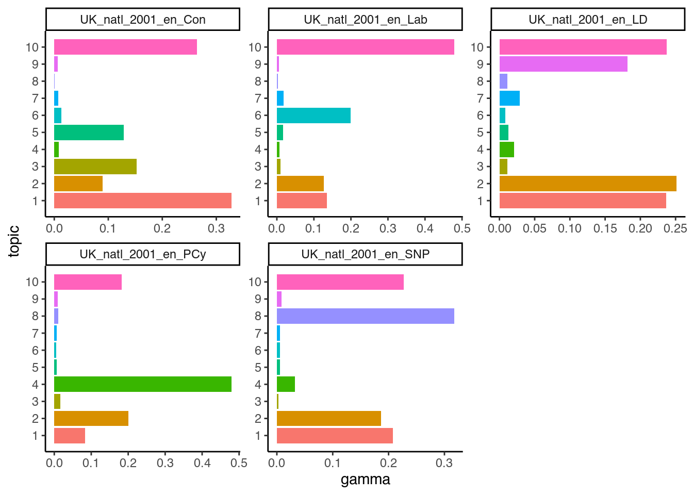
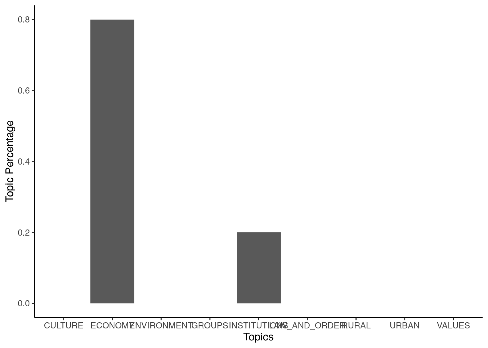
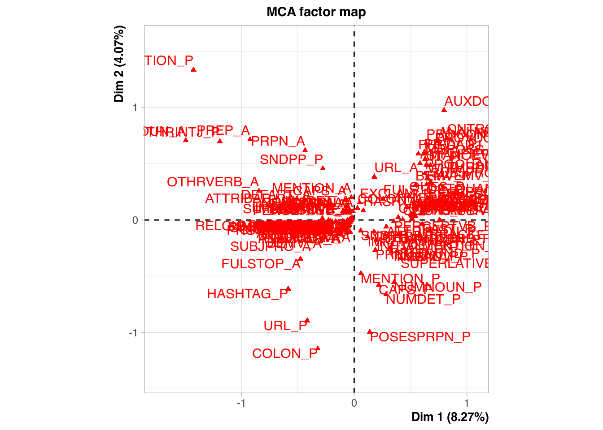
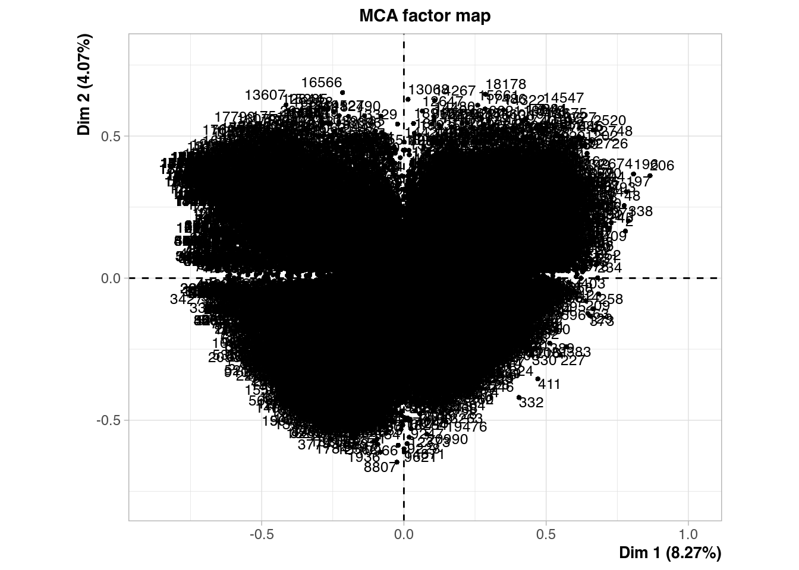
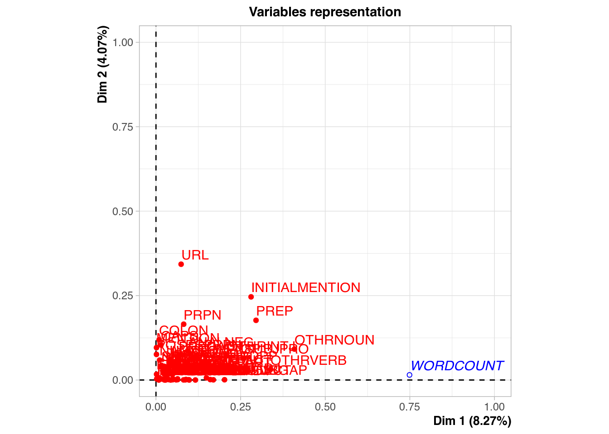
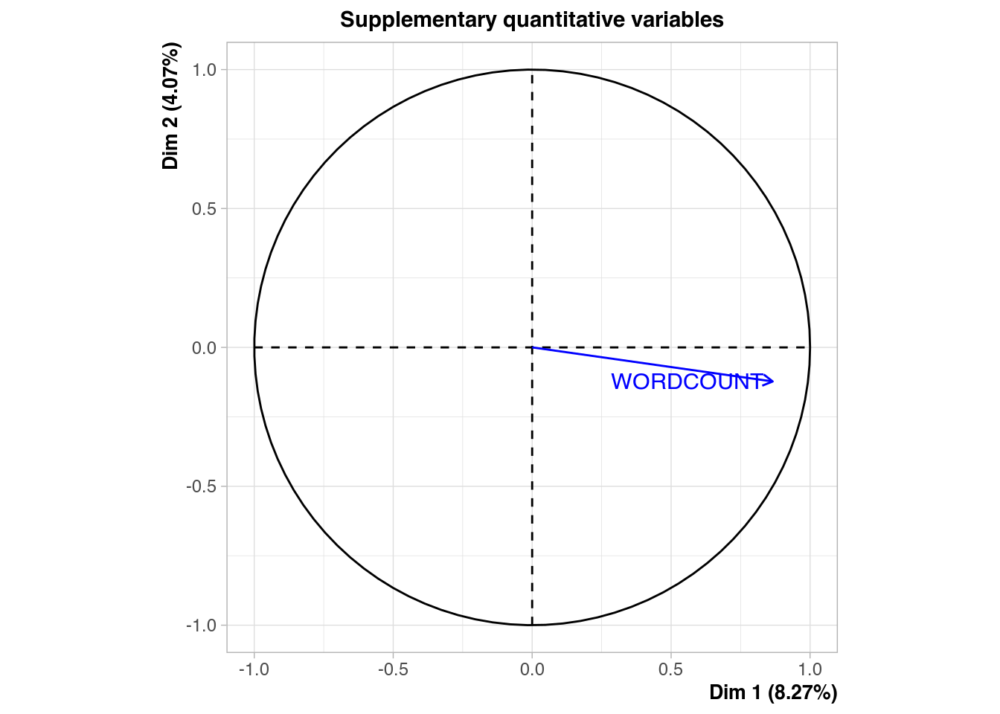

While supervised models often work fine for text classification, one disadvantage is that we need to set specifics for the model. As an alternative, we can not specify anything and have R find out which classifications work. There are various algorithms to do so, and we will focus on two: Latent Dirichlet Allocation and Correspondence Analysis.
Latent Dirichlet Allocation, or LDA, relies on the idea is that each text is in fact a mix of topics, and each word belongs to one these. To run LDA, we will use the topicmodels package, and use the British party manifestos again as an example:
library(topicmodels)
library(quanteda)
library(quanteda.corpora)
data(data_corpus_ukmanifestos)
corpus_manifestos <- corpus_subset(data_corpus_ukmanifestos,
Year == 2001)
corpus_manifestos <- corpus_subset(corpus_manifestos, Party ==
"Lab" | Party == "LD" | Party == "Con" | Party == "SNP" |
Party == "PCy")
data_manifestos_tokens <- tokens(corpus_manifestos, what = "word",
remove_punct = TRUE, remove_symbols = TRUE, remove_numbers = TRUE,
remove_url = TRUE, remove_separators = TRUE, split_hyphens = FALSE,
include_docvars = TRUE, padding = FALSE, verbose = TRUE)
data_manifestos_tokens <- tokens_tolower(data_manifestos_tokens,
keep_acronyms = FALSE)
data_manifestos_tokens <- tokens_select(data_manifestos_tokens,
stopwords("english"), selection = "remove")
data_manifestos_dfm <- dfm(data_manifestos_tokens)First, we will use the convert function to convert the data frequency matrix to a data term matrix as this is what topicmodels uses:
manifestos_dtm <- convert(data_manifestos_dfm, to = "topicmodels")Then, we fit an LDA model with 10 topics. First, we have to define some a priori parameters for the model. Here, we will use the Gibbs sampling method to fit the LDA model (Griffiths and Steyvers 2004) over the alternative VEM approach (Blei, Ng, and Jordan 2003). Gibbs sampling performs a random walk over the distribution so we need to set a seed to ensure reproducible results. In this particular example, we set five seeds for five independent runs. We also set a burn-in period of 2000 as the first iterations will not reflect the distribution well, and take the 200th iteration of the following 1000:
burnin <- 2000
iter <- 1000
thin <- 200
seed <- list(42, 5, 24, 158, 2500)
nstart <- 5
best <- TRUEThe LDA algorithm estimates topic-word probabilities as well as topic-document probabilities that we can extract and visualize. Here, we will start with the topic-word probabilities called beta. To do this, we will use the tidytext package which is part of the tidyverse family of packages. Central to the logic of tidyverse packages is that tidytext does not rely on a document term matrix but represents the data in a long format (Welbers, Van Atteveldt, and Benoit 2017, 252). Although this makes it less memory efficient, such data arrangement lends itself to effective visualisation. The whole logic of these packages is that it works with data which has columns (variables) and rows with single observations. While this is the loutput:
html_document: ogic most people know, but it is not always the quickest (and is also not used by quanteda). Yet, it always allows you to look at your data in a way most will understand. First, we run the LDA and have a look at the first 10 terms:
British_lda10 <- LDA(manifestos_dtm, k = 10, method = "Gibbs",
control = list(burnin = burnin, iter = iter, thin = thin,
seed = seed, nstart = nstart, best = best))
British_lda10## A LDA_Gibbs topic model with 10 topics.Here, we can see that the 10th topic is most concerned with the Conservative party, as is topic 7 with the Liberal Democrats, and topic 9 with the Green Party. Topic 4 concerns green solutions and energy and topic 3 is about equalities.
Now, we load the packages and use the tidy command to prepare the dataset for visualisation. Then, we tell the command to use the information from the beta column, which contains the probability of a word occurring in a certain topic:
library(tidytext)
library(dplyr)
library(ggplot2)
British_lda10_topics <- tidy(British_lda10, matrix = "beta")If we would look into the dataset now, we would see that it has 57060 observations with 3 variables. These are the number of the topic, the word (the term) and the beta - the chance that the word occurs in that topic. We now want to visualise only the top ten words for each topic in a bar-plot. Also, we want the graphs of each of these ten topics to appear in a single graph. To make this happen, we first have to select the top ten words for each topic. We do so gain using a pipe (which is the %>% command). This pipe transports an output of a command to another one before saving it. So here, we take our data-set and group it by topic using the group_by command. This command groups the dataset into 10 groups, each for every topic. What this allows us is to calculate things that we otherwise calculate for the whole data-set but here calculate for the groups instead. We then do so and select the top 10 terms (based on their beta value), using top_n. We then ungroup again (to make R view it as a single data-set), and use the arrange function to ensure the data-set has the topics sorted in an increasing fashion and the beta values in a decreasing fashion. Finally, we save this into a new object:
British_lda10_topterms <- British_lda10_topics %>%
group_by(topic) %>%
top_n(10, beta) %>%
ungroup() %>%
arrange(topic, -beta)If we now look at the data-set, we see that it is much smaller and has the topics ordered. Yet, before we can plot this we have to ensure that (seen from top to bottom), all the beta for the first topic come first, then for the second topic, and so on. To do so, we use the mutate command, and redefine the term variable so that it is re-ordered based first on the term and then on the beta value. The result is a data frame with first the first topic, then the second topic etc., and with the beta values ordered within each topic. We then make the figure, with the terms on the horizontal axis and the beta values and the vertical axes, and have the bars this generates coloured by topic. Also, we switch off the legend (which we do not need) and use the facet_wrap command to split up the total graph (which would have 107 bars otherwise - 107 bars and not a 100 because some terms had the same value for beta). We set the options for the scales to be free as it might be that the beta values for some topics are larger or smaller than for the others. Finally, we flip the graphs and make the x-axis the y-axis and vice versa, as this makes the picture more clear:
British_lda10_topterms %>%
mutate(term = reorder(term, beta)) %>%
ggplot(aes(term, beta, fill = factor(topic))) + geom_col(show.legend = FALSE) +
facet_wrap(~topic, scales = "free") + coord_flip()What is clear here is that looking at only the words in each topic only says so much. In the first topic, the term “meps” is more important than anything else, and so is “eu” in topic number 10. Also, in topic number six, we see that a bullet symbol causes the highest beta value - which indicates how important it is that we remove this kind of clutter (which we forgot about here).
Another question we can ask is how much of each topic is in each of the documents. Put in another way: do certain documents talk more about certain topics than others? To see this, we first generate a new data frame with this information, known as the gamma value for each document:
British_lda10_documents <- tidy(British_lda10, matrix = "gamma")We then go through similar steps to make the data-set ready for use and prepare the graph. For the graph, the only steps we do different are to force R to label each topic on the axis (as otherwise it will treat it as a continuous variable and come up with useless values such as 7.5), and to give it a different look (using the theme_classic() command):
British_lda10_toptopics <- British_lda10_documents %>%
group_by(document) %>%
top_n(10, gamma) %>%
ungroup() %>%
arrange(topic, -gamma)
British_lda10_toptopics %>%
mutate(term = reorder(topic, gamma)) %>%
ggplot(aes(topic, gamma, fill = factor(topic))) + geom_col(show.legend = FALSE) +
scale_x_continuous(breaks = c(1, 2, 3, 4, 5, 6, 7, 8, 9,
10)) + facet_wrap(~document, scales = "free") + coord_flip() +
theme_classic()
Here, we see that the Conservatives talked about topics 10 and 8 a lot (and also 6 in 2014), which makes sense, as these topics cover the EU and trade. The Greens use topic 4 a lot in 2009 (as it is about Green policies), but not in 2014. Also, the liberal topic 7 occurs a lot in 2009 Liberal Democrat texts, but not in their 2014 manifesto.
An alternative to the above approach is one known as seeded-LDA. This approach uses seed words that can steer the LDA into the right direction. One origin of these seed words can be a dictionary that tells the algorithm which words belong together in various categories. To use it, we will first load the packages and set a seed:
library(seededlda)##
## Attaching package: 'seededlda'## The following objects are masked from 'package:topicmodels':
##
## terms, topics## The following object is masked from 'package:stats':
##
## termslibrary(quanteda.dictionaries)
set.seed(42)Next, we need to specify a selection of seed words in a dictionary form. While we can construct a dictionary ourselves, here we choose to use the Laver and Garry dictionary we saw earlier. We then use this dictionary to run our seeded LDA:
dict <- dictionary(data_dictionary_LaverGarry)
seededmodel <- textmodel_seededlda(data_manifestos_dfm, dictionary=dict)
terms(seededmodel, 20)## CULTURE ECONOMY ENVIRONMENT GROUPS INSTITUTIONS
## [1,] "people" "will" "environmental" "women" "reform"
## [2,] "media" "work" "environment" "race" "parliament"
## [3,] "museums" "children" "green" "ethnic" "continue"
## [4,] "galleries" "education" "population" "asian" "commission"
## [5,] "operation" "health" "clean" "girls" "council"
## [6,] "operations" "investment" "emissions" "racist" "westminster"
## [7,] "artistic" "economic" "production" "racing" "councils"
## [8,] "operating" "care" "car" "racial" "assembly"
## [9,] "theatre" "transport" "cleaner" "racism" "rules"
## [10,] "music" "school" "congestion" "woman" "legislation"
## [11,] "musical" "benefit" "recycling" "racially" "process"
## [12,] "art" "poverty" "products" "liberal" "schemes"
## [13,] "operators" "money" "environmentally" "s" "modern"
## [14,] "operate" "economy" "emission" "democrats" "scheme"
## [15,] "operational" "training" "produce" "freedom" "office"
## [16,] "theatres" "pay" "recycle" "safety" "election"
## [17,] "anglers" "choice" "productive" "reduce" "agency"
## [18,] "operated" "working" "litter" "energy" "vote"
## [19,] "operates" "teachers" "product" "action" "reforms"
## [20,] "conservatives" "establish" "fur" "setting" "democratic"
## LAW_AND_ORDER RURAL URBAN VALUES
## [1,] "police" "farming" "towns" "rights"
## [2,] "forces" "fisheries" "town" "human"
## [3,] "prison" "farmers" "wales" "maintain"
## [4,] "drugs" "countryside" "party" "discrimination"
## [5,] "victims" "fishing" "call" "principle"
## [6,] "fraud" "agriculture" "shall" "threat"
## [7,] "tough" "agricultural" "order" "leadership"
## [8,] "force" "village" "towards" "principles"
## [9,] "drug" "fish" "important" "proud"
## [10,] "officers" "wildlife" "press" "past"
## [11,] "court" "farms" "adequate" "immigration"
## [12,] "courts" "villages" "therefore" "historic"
## [13,] "determined" "farm" "since" "sex"
## [14,] "sentences" "landscape" "similarly" "leader"
## [15,] "sentence" "fishermen" "union" "marriage"
## [16,] "policing" "landscapes" "coal" "reliable"
## [17,] "forced" "hens" "expenditure" "history"
## [18,] "offences" "forest" "one" "preserve"
## [19,] "victim" "feed" "devolution" "traditions"
## [20,] "prisoners" "lanes" "must" "sexual"Note that using the dictionary has ensured that only the categories of the dictionary are used. We can therefore also have an easy look at the proportions of these categories as well:
corpus_manifestos$topic <- topics(seededmodel)
topics_table <- ftable(corpus_manifestos$topic)
topicsprop_table <- as.data.frame(prop.table(topics_table))
ggplot(data=topicsprop_table, aes(x=Var1, y=Freq))+
geom_bar(stat="identity")+
labs(x="Topics", y="Topic Percentage")+
theme(axis.text = element_text(size=10, angle=45,hjust = 1))+
theme_classic()
Correspondence Analysis has a similar logic as Principal Component Analysis. Yet, while PCA requires metric data, CA only requires nominal data (such as text). The idea behind both is to reduce the complexity of the data by looking for new dimensions. These dimensions should then explain as much of the original variance that is present in the data as possible. Within R many packages can run CA (such as the ca and FactoMineR packages and even quanteda.textmodels). One interesting package is the R.temis package. The R.temis package is interesting as it aims to bring the techniques of qualitative text analysis into R. Thus, the package focus on the import of corpus from programs such as Alceste (https://www.image-zafar.com/Logicieluk.html) and sites such as LexisNexis (https://www.lexisnexis.com) - programs that are often used in qualitative text analysis. The package itself is build on the popular tm package and has a largely similar logic.
To carry out the Correspondence Analysis, R.temis uses the FactoMineR and factoextra packages. Here, we will look at an example with these packages using data from the an article on the stylistic variations in the Twitter data of Donald Trump between 2009 and 2018 (Clarke and Grieve 2019). Here, the authors aimed to figure out whether the way Trump’s tweets were written fluctuated over time. To do so, they downloaded 21,739 tweets and grouped them into 63 categories over 4 dimensions based on their content. Given that all the data used in the article is available for inspection, we can attempt to replicate part of the analysis here.
First, we load the packages we need for the Correspondence Analysis:
library(FactoMineR)
library(factoextra)## Welcome! Want to learn more? See two factoextra-related books at https://goo.gl/ve3WBalibrary(readr)Then, we import the data. You can do so either by downloading the replication data yourselves, or use the file we already put up on GitHub:
urlfile = "https://raw.githubusercontent.com/SCJBruinsma/qta-files/master/TRUMP_DATA.txt"
tweets <- read_csv(url(urlfile))##
## ── Column specification ────────────────────────────────────────────────────────
## cols(
## .default = col_character(),
## TWEETID = col_double(),
## WORDCOUNT = col_double(),
## DATE = col_date(format = ""),
## TIME = col_time(format = ""),
## RETWEET = col_double(),
## FAV = col_double()
## )
## ℹ Use `spec()` for the full column specifications.This data-set contains quite some information we do not need. To begin with, we remove all those variables that do not contain information about the 63 categories and the length of the tweet in words:
tweets_mat<-tweets[,2:65]We can then run the MCA with the FactoMineR package. For this, we have to give the data-set and the number of dimensions we think are in the data. We can set the latter either by establishing the dimensions as in a regular PCA (for example through a scree plot) or based on theory. Here we combine both and use the 5 dimensions established in the article. In addition, we set a supplementary quantitative variable as quanti.sup=1. As this is a quantitative variable, it is not taken into consideration by the MCA, but does allow us to assess later on how it correlates with each of the five dimensions:
mca_tweets <- MCA(tweets_mat, ncp=5, quanti.sup=1)
First, let’s start by looking at the association of the wordlength with the five dimensions:
mca_tweets$quanti.sup## $coord
## Dim 1 Dim 2 Dim 3 Dim 4 Dim 5
## WORDCOUNT 0.8654755 -0.1226605 0.05684362 -0.05895059 0.1153646As we can see, the word length has a strong correlation with Dimension 1. This basically means that this dimension captures the length of the words and not a seperate dimension we are interested in. Thus, when we want to look at the correspondence between the categories and the dimensions, we can ignore this dimension. Thus, for the MCA, we will look at dimensions 2 and 3:
fviz_mca_var(mca_tweets,
repel = TRUE,
geom = c("point"),
axes = c(2, 3),
ggtheme = theme_minimal())Here, we only plot the points as adding the labels as well will make the picture quite cluttered. In the article, Dimension 2 is identified as “Conversational Style” and Dimension 3 as “Campaigning Style.” The plot thus nicely shows us that some categories belong to one of these dimensions and not to the other. To see for which cases this is mostly the case (the ones that have the most extreme positions), we can have a look at their coordinates:
var <- get_mca_var(mca_tweets)
coordinates <- as.data.frame(var$coord)
coordinates <- coordinates[order(coordinates$`Dim 2`),]
head(coordinates)## Dim 1 Dim 2 Dim 3 Dim 4 Dim 5
## COLON_P -0.3220412 -1.1428256 0.04281867 1.0927841 0.53554321
## POSESPRPN_P 0.1387993 -0.9951648 -0.61464413 0.2225888 -0.25936891
## URL_P -0.4158210 -0.8934352 0.21496850 0.3550399 0.06615652
## NUMDET_P 0.2826158 -0.6607215 0.08456176 -0.2142622 -0.10244773
## HASHTAG_P -0.5848886 -0.6130760 0.86493960 0.1354279 0.34699663
## CAPS_P 0.2182945 -0.5780128 0.50565549 -0.1774480 0.20366075Here, remember to look only at the results from the second column onward. Here, we see that one extreme category for the second dimension (Conversational Style) was the use of a colon (:) or possessive proper nouns (such as Hillary’s). This seems to fit well with the idea of conversational style. We can also see that the latter one also corresponds quite well with Dimension 3 (Campaigning Style), while the first one does not.
Apart from this simple overview, Correspondence Analysis has many more features, some of which are included in the article and which include cluster analysis and heatmaps - which we recommend to take a look at.